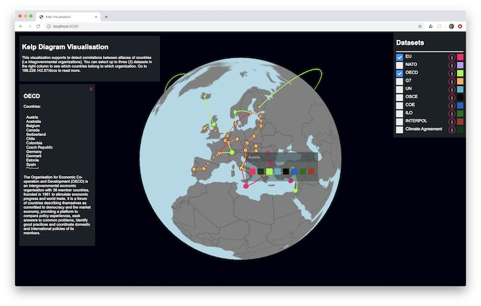

This project is an proof of concept visualisation of countries belonging in different intergovernmental organizations using Threejs and D3.js. Furthermore, this project serves as an implementation of Kelp Diagrams visualisation, presented in the paper by Dinkla et. al. which can be found. here.
Start the project locally by running
npm install && npm start
The algorithm is implemented in three main steps:

assets -directory contains all the necessary assets
src -directory contains the application source code
The data is parsed with the generate_dataset.ipynb using python from wikipedia pages of the different intergovernmen organisations. Snapshot of the first 10 rows of the data, including the column names:
The function that scrapes the given wikipedia page and a list from it looks like this:
def getWikipediaList(url, table_index):
page = requests.get(url)
soup = bs4.BeautifulSoup(page.content, 'html.parser')
tables = soup.find_all('table')
table = tables[table_index]
table_headers = []
row_headers = []
for tx in table.find_all('th'):
if tx.has_attr('scope'):
if tx['scope'] == 'col':
table_headers.append(re.sub('\[\d+\]','',tx.text.replace('\n', '')))
if tx['scope'] == 'row':
row_headers.append(re.sub('\[\d+\]','',tx.text.replace('\n', '')))
else:
table_headers.append(re.sub('\[\d+\]','',tx.text.replace('\n', '')))
result = pd.DataFrame([[td.text for td in row.find_all('td')] for row in table.tbody.find_all('tr')])
print(row_headers)
result.columns = table_headers
result.replace(r'\n', '', regex = True, inplace = True)
result.replace(r'[^\x00-\x7F]+', '', regex = True, inplace = True)
result.drop([0], inplace= True)
if(len(row_headers)>0):
result = result.shift(periods=1, axis=1)
result = result[0:len(result)-1]
result['Name'] = row_headers
return result
And this is how the function to retrieve each dataset as dataframe:
uncfcc_countries = getWikipediaList(url = 'https://en.wikipedia.org/wiki/List_of_parties_to_the_United_Nations_Framework_Convention_on_Climate_Change', table_index=0)
eu_countries = getWikipediaList('https://en.wikipedia.org/wiki/Member_state_of_the_European_Union', table_index=1)
nato_countries = getWikipediaList('https://en.wikipedia.org/wiki/Member_states_of_NATO', 0)
oecd_countries = getWikipediaList('https://en.wikipedia.org/wiki/OECD', 11)
g7_countries = getWikipediaList('https://en.wikipedia.org/wiki/Group_of_Seven', 4)
un_countries = getWikipediaList('https://en.wikipedia.org/wiki/Member_states_of_the_United_Nations', 1)
osce_countries = getWikipediaList('https://en.wikipedia.org/wiki/Organization_for_Security_and_Co-operation_in_Europe', 1)
coe_countries = getWikipediaList('https://en.wikipedia.org/wiki/Member_states_of_the_Council_of_Europe', 0)
# eu standardizationz
eu_countries = eu_countries.apply(lambda x: x.str.strip() if x.dtype == "object" else x)
eu_countries = eu_countries.apply(lambda x: x.str.replace("\[.\]", "") if x.dtype == "object" else x)
#un standardization
un_countries = un_countries.apply(lambda x: x.str.strip() if x.dtype == "object" else x)
un_countries = un_countries.apply(lambda x: x.str.replace("\[.*\]", "") if x.dtype == "object" else x)
#osce standardization
germany_index = osce_countries[osce_countries['State'] == 'Germany- as West Germany- as East Germany'].index[0]
north_macedonia = osce_countries[osce_countries['State'] == 'North Macedonia[Note 3][9]'].index[0]
russia_index = osce_countries[osce_countries['State'] == 'Russia (as Soviet Union)'].index[0]
serbia_index = osce_countries[osce_countries['State'] == 'Serbia (as Yugoslavia)'].index[0]
osce_countries.at[germany_index, 'State'] = 'Germany'
osce_countries.at[north_macedonia, 'State'] = 'Macedonia [FYROM]'
osce_countries.at[russia_index, 'State'] = 'Russia'
osce_countries.at[serbia_index, 'State'] = 'Serbia'
Combine them into one coordinates dataframe, which is the final form of the data to be used by the visualisation:
coordinates = pd.read_csv('assets/world_country_and_usa_states_latitude_and_longitude_values.csv')
coordinates = coordinates[['country_code', 'latitude', 'longitude', 'country']]
coordinates['in_eu'] = np.where(coordinates['country'].isin(eu_countries['Name'].values), True, False)
coordinates['in_uncfcc'] = np.where(coordinates['country'].isin(uncfcc_countries['State'].values), True, False)
coordinates['in_nato'] = np.where(coordinates['country'].isin(nato_countries['Member state'].values), True, False)
coordinates['in_oecd'] = np.where(coordinates['country'].isin(oecd_countries['Country'].values), True, False)
coordinates['in_g7'] = np.where(coordinates['country'].isin(g7_countries['Member'].values), True, False)
coordinates['in_un'] = np.where(coordinates['country'].isin(un_countries['Member state'].values), True, False)
coordinates['in_osce'] = np.where(coordinates['country'].isin(osce_countries['State'].values), True, False)
coordinates['in_coe'] = np.where(coordinates['country'].isin(coe_countries['State'].values), True, False)
coordinates['in_ilo'] = np.where(coordinates['country'].isin(un_countries['Member state'].values), True, False)
coordinates['in_interpol'] = np.where(coordinates['country'].isin(interpol_countries), True, False)
not_in_ilo = ['Andorra', 'Bhutan', 'Liechtenstein', 'Micronesia', 'Monaco', 'Nauru', 'North Korea']
for country in not_in_ilo:
coordinates.loc[coordinates['country'] == country, 'in_ilo'] = False
coordinates